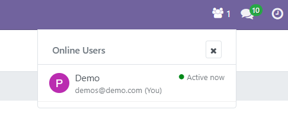
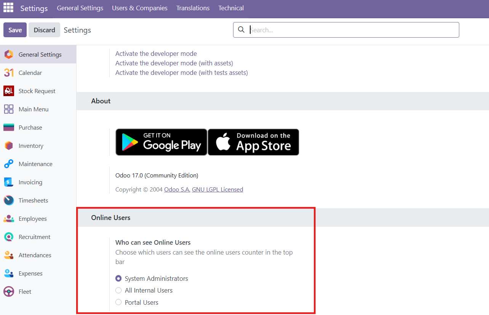

See who's currently active in your Odoo system at a glance
Display live count of online users directly in your systray
Click to see detailed list with user status and last activity
Uses native Odoo bus.presence - no custom models or heavy resources
Install and it works immediately - configure visibility in settings


Compatible with Odoo 17.0+ | LGPL-3 License
Made with ❤️ by Paulius11